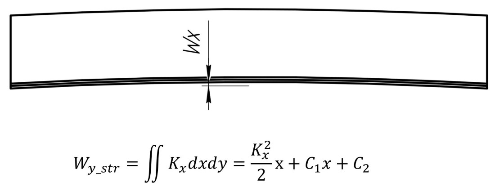
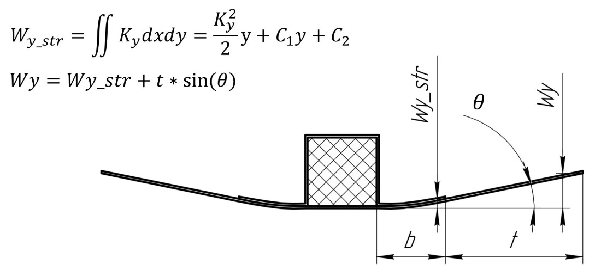
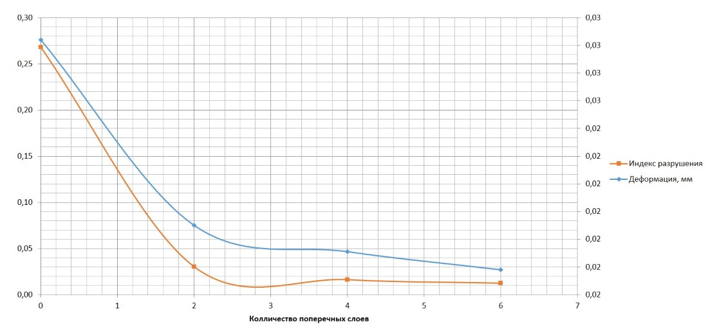
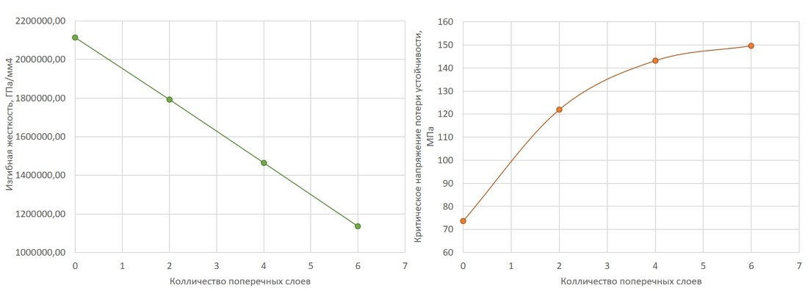
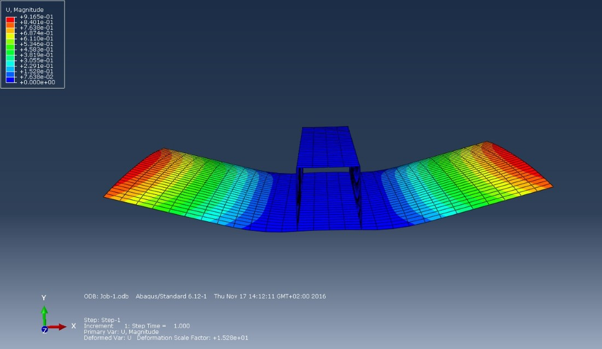
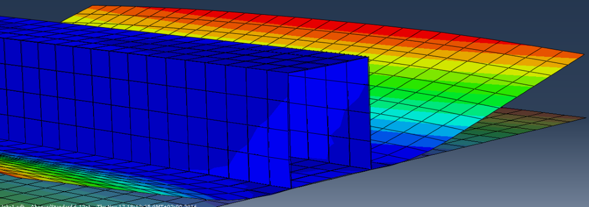
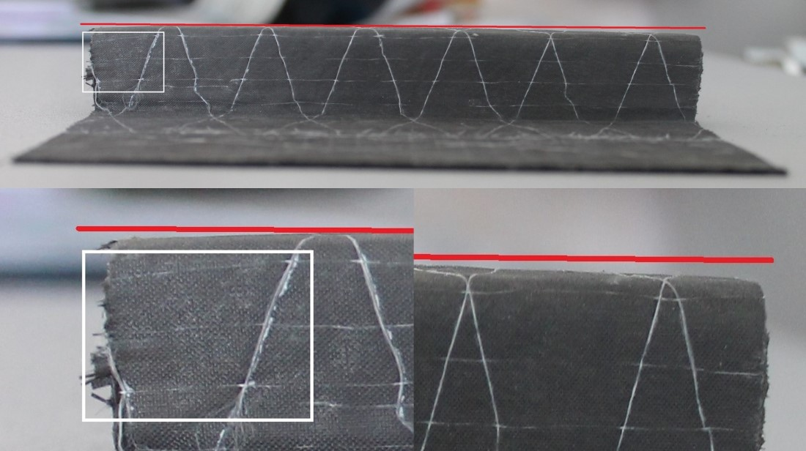
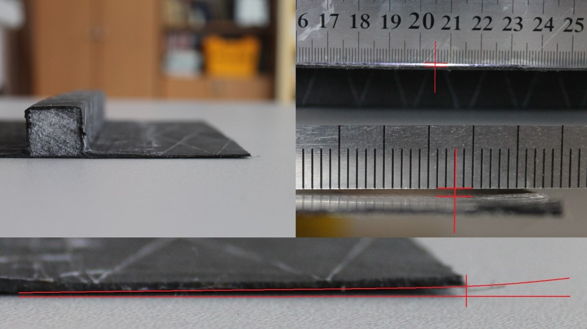

Technological stresses of integrated constructions
Design of stiffened composite panels with account process induced deformation

Goals
Цель: Разработка методов проектирования композитных конструкций с учетом технологического НДС Задачи первого этапа:
- Исследование влияния структурных параметров интегральной конструкции на примере стрингерной панели на её технологическое НДС
- Исследование возможностей варьирования параметрами конструкции с целью обеспечения допустимого уровня технологических деформаций
Задачи второго этапа:
- Разработать аналитический метод прогнозирования технологического НДС подкрепленных композитных панелей.
- Оценка достоверности методики путем сравнения с МКЭ
- Сравнение результатов с экспериментом
 (Картинка из интернетов)
(Картинка из интернетов)
Introduction
При применении композиционных материалов (КМ) в авиационной промышленности значительное внимание уделяется не только их эксплуатационным, но и технологическим характеристикам. Особенно трудоемким и ресурсоемким является процесс формования изделий из КМ. В следствии чего особое внимание необходимо уделить так называемым интегральным конструкциям – конструкциям, получаемым за один цикл формования. Кроме очевидной экономической выгоды, интегральные конструкции обладают повышенной прочностью в сравнении с аналогичными конструкциями, полученными классическими методами.
Однако интегральные конструкции куда более подвержены температурным деформациям и короблению. Это происходит из-за того, что при изготовлении ИК могут использовать разные материалы, или укладывать материал под разными углами. Различный КЛТР вызывает неравномерные по геометрии детали деформации. Остывание материалов вызывают внутренние температурные напряжения. И, как следствие, конструкция является напряженной еще до прикладывания к ней внешней нагрузки.
В работе рассмотрены различные элементы интегральных конструкций (с подкреплением, трехслойные и др.) Проанализированы основные закономерности технологического НДС данных элементов, на основании чего даны практические рекомендации к проектированию и изготовлению интегральных композитных конструкций.

В работе рассмотрена панель, с продольным по ширине расположением стрингеров. Задачами данной работы является разработать аналитический метод прогнозирования технологического НДС подкрепленных композитных панелей, необходимый для постановки задачи оптимизации панели с учетом технологического НДС, а также разработка методики проектирования подкрепленных панелей с учетом ограничений на величину технологических деформаций.
Аналитический расчет
 Где - B - Мембранные жесткостя, С - “смешанные” жесткостя, M - температурные моменты, D - изгибные жесткостя, k,j - 1,2,3, e - деформации.
Где - B - Мембранные жесткостя, С - “смешанные” жесткостя, M - температурные моменты, D - изгибные жесткостя, k,j - 1,2,3, e - деформации.
Продольный прогиб определяется:

Поперечный прогиб элементы стрингерной панели:

График изменения прочности и деформации от замещения части несущих слоев композита слоями технологическими:

Где:
- Синий - Деформация, мм. Правая вертикальная ось.
- Оранжевый - Индекс разрушения, %. Левая вертикальная ось.
Еще зависимости некоторых характеристик от внедрения технологических слоев. 
- Левый график - Изгибная жесткость, ГПа/мм4.
- Правый грайик - Критические усилия потери устойчивости, МПа.
МКЭ
Величины деформаций элемента с использованием метода конечных элементов:


Экспериментальный образец
Величины деформаций можно наблюдать невооруженным глазом.


Исходный код
Код python 3+ для определения температурных деформаций можно взять отсюда. Вместо модуля materials можно просто подставлять соответствующие величиный ФМХ материалов.
Source coe you can find there
Заключение
В заключение можно сказать, что проблемма технологических напряжений особенно остра в интегральных композитных конструкциях. Тем более критичны незначительные изменения формы в отраслях близких к авиации и космонавтики, авто- и мотопромышленности где от соблюдения теоретического контура зависят аэродинамические показатели всей конструкции.
Судя по экспериментальным данным, а так же данным МКЭ - пренебрежение технологическими дефомациями может иметь последствия. Критичные во многих случаях. Учитывание таких деформаций и прогнозирование температцрных напряжений на этапе коннструирования обязано существенно понизить вероятность брака готового изделия.
Приведеный аналитический метод позволяет с удовлетворительной точностю прогнозировать величины технологических температурыных отклонений (прогибов) в подкрепленных панелях в зависимости от материала, структуры, формы и размеров панели и стрингеров, координаты рассматриваемой точки и даже! - последовательности укладки слоев.